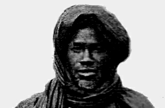

Les Bayes-Fall
Le Baye Fall (ou Baay Faal) est, au Sénégal, une branche de la confrérie des Mourides fondée par Ibrahima Fall. Le mouridisme est une confrérie ou voie soufie (tariqa en arabe) comme on en trouve à différents endroits du monde, se caractérisant notamment par l'importance du lien entre le cheikh et son disciple, la pratique du dhikr (rappel des noms divins et invocation à l'aide d'un chapelet), la poésie et la méditation, tous typiques du soufisme. Le mot « murid », qui veut dire « aspirant », est lui-même emprunté au lexique soufi. Est plutôt un ordre divin, et très différent d'une conception sectique.
Fondateur
 Ndiaby Fall se trouve a deux kilomètres au sud de la ville de Kebemer . C’est dans cette localité que naquit CHEIKH IBRA FALL vers 1855 .C’est une province habitée par des GUEDJI et des DOROBE (noblesse du cayor ) pouvant prétendre à l’exercice du pouvoir. Contrairement à une tendance qui voudrait que Ndiaby Fall ait été fondée au XVIII ème siècle . Cette contrée a préexisté à la bataille de Danki (11459). Ndiaby fait partie des localités appelées Falléne-Dedd (du nom de Fall) qui ont eu à hébergé " les premiers Lamanes du Kayor (propriétaires terriens), devenus plus tard la dynastie royale du Kayor et du Baol, à la suite du triomphe du Lamane Ngoné Sobel sur le Bourba Djoloff au XV ème siècle. On peut citer entre autres Palléne-Dedd, Nguiguis, Ndande, etc. DE NDIABY FALL… Ainsi il est établi sans doute que Cheikh Ibra Fall est un garmi. Cette assertion nous semble revêtir une grande importance, parce qu’elle devra être l’une des bases fondamentales d’un quelconque travail sur le cheikh. Il faut également souligner que Ndiaby deviendra un grand centre d’enseignement coranique à l’image de Pire ou de Coki. Les ascendants de Cheikh Ibra Fall furent de grands érudits connus dans la province. Il s’agit de Yoro Ndiaby Fall et de Barane Ndiaby Fall. Modou Rokhaya Fall est un Garni . Cette assertion nous semble revêtir une importance ,parce qu’elle devra être l’une des bases fondamentales d’un quelconque travail sur le CHEIKH. Il faut également souligner que NDIABY deviendra un grand centre d’enseignement coranique à l’image de PIRE ou KOKI.Les ascendants de CHEIKH IBRA FALL furent de grands érudits connus dans la province. Il s’agit de YORO NDIABY FALL et de BARANE NDIABY FALL. MODOU ROKHAYA FALL ,père de MAME CHEIKH IBRA FALL est un descendant direct de BARANE NDIABY FALL. Mais il se marias la famille de ses oncles maternels habitant dans le NDIRA,plus précisément à WAKHI.Il eut avec Sokhna SEYNABOU NDIAYE ,IBRAHIMA FALL(le futur LAMP FALL),SALIOU FALL et ROKHAYA FALL. Quelques années après la naissance de cette dernière ,il quitta (pour des raisons encore inconnues)Ndiaby pour aller dans le Ndiaré .Il s’installa dans un village appelé Sali Asta où il a vécu peu de temps avec ses enfants avant de mourir. De toutes les manières intervalle de temps à déterminer parce que ce que fut nécessaire pour inculquer à CHEIKH IBRA FALL le Coran et les rudiments de la langue arabe. Il disait avoir appris intégralement de son père (les fiches de l’administration coloniale l’attestent ainsi que ceux recueillis oralement).Sokhna SEYNABOU NDIAYE se maria dans la contrée ,mais les enfants issus de ce second mariage n’ont pas survécu à la forte mortalité de l’époque . Devenu grand et fort, Cheikh IBRA FALL resta auprès des siens pour soutenir moralement et matériellement sa mère. A WAKHI Cette localité est située actuellement dans le département de Louga entre NDIAGNE et WARAKH. C’est dans cette partie du NDIARE qu’il faudra replacer MAME CHEIKH IBRA FALL. Il y passa une bonne partie de son enfance. Au juste ,il a vécu dans trois localités :NDIABY FALL,SALLY ASTA et WAKHI. Mais il a beaucoup plus duré dans les deux dernières localités situées dans le NDIARE au cœur même du NDIAMBOUR. D’ailleurs, l’administrateur colonial l’a toujours présenté comme un NDIAMBOUR-NDIAMBOUR . Ainsi, dans la fiche signalétique des services de police coloniale ,un informateur mal averti indique que CHEIKH IBRA FALL était né à Keur Atoumane Fall situé dans le NDIAMBOUR. Malheureusement, ce sont de telles informations qui sont reprises par certains chercheurs, distillant volontairement ou involontairement des contre-vérités. Le NDIARE est une province du NDIAMBOUR , à la limite de la frontière naturelle avec le KAYOR. Il a acquis sa renommée pour deux raisons. La première est liée à la présence des grands érudits musulmans. La seconde est que le NDIARE consacrait à tout fugitif ou esclave une impunité et une libération. Ce statut lui était reconnu par tous les royaumes du Sénégal . C’était une sorte de Suisse ,eu égard au rôle qu’elle a joué lors de la seconde guerre mondiale . Les origines Ndiambour-Ndiambour de CHEIKH IBRA FALL furent un atout important . Elles développèrent en lui une certaine ouverture d’esprit. Le Ndiambour était une zone circulation des marchandises venant du Mali, du Maghreb et de l’intérieur du Sénégal. Le commerce demeurait l’activité dominante de la province. Ainsi, le Ndiambour devenait un lieu de brassage culturel car des produits de toutes sortes fusaient de partout pour converger vers ce haut lieu. Cheikh Ibra Fall a grandi dans cette localité. Ainsi il devait être imprégné d’une certaine philosophie de la communication. La réussite économique du mouridisme doit beaucoup aux larges capacités de Cheikh Ibra Fall acquises durant son existence dans le Ndiambour.
Son rencontre avec Serigne Touba
la rencontre entre Cheikh Bamba et Mame Cheikh Ibrahima Fall revêt une importance capitale dans la compréhension de cette dialectique qui s’est tissée entre les deux hommes. L’attitude de Cheikh Ibra est pleine de symbolisme. Mais c’est dans le discours qu’ils se sont tenus que tout ce symbolisme aura mieux rejailli. Il serait difficile voire impossible de rendre (en français) textuellement ce qu’ils se sont dits . Serigne Bassirou Mbacké, nous en rapporte quelques éléments dans son ouvrage théologique ‘’ Les Bienfaits de l’Eternel’’ qui est une sorte de biographie de Serigne Touba Mbacké, nous en rapporte quelques éléments dans son ouvrage théologique intitulé ‘’ Les bienfaits de l’Eternel ‘’ qui est une sorte de biographie de Serigne Touba. Ainsi le grand Mouride Cheikh Ibrahima Fall, qui fut d’ailleurs un des grands hommes de bonne intention a écrit : ‘’quand je me suis présenté au Cheikh pour lui faire serment d’affiliation’’. Je n’ai quitté ma maison que pour chercher un tel guide, je ne trouvais que sa tombe, la véracité de mon intention de suivre son exemple me ferait parvenir à mon objectif. Je vous prête serment de n’acquérir rien de ce monde et de me préoccuper exclusivement de Dieu et de la vie future. ‘’ Alors, le Cheikh lui répondit :’’O Ibrahima ! Quant à moi, si je n’avais des traces du Prophète que ces étoiles et ce ciel (qu’il est établi de manière authentique que le Prophète les regardant), j’aurais été sûr que mon intention à son service et mon amour pour lui m’assureraient la satisfaction de mes besoins et la conduite (dans la bonne voie) conformément au meilleur destin que Dieu Très-Haut a réservé à celui à qui il a été donné la foi et l’amour en lui. Cela dit, j’agrée votre serment et vous tiens à obéir aux ordres et à voter les interdictions et à orienter votre préoccupation vers Dieu. Mais n’attendez de moi dans cette vie ni abri vous protègeant du soleil ni autre bien matériel’’. Le mouridisme a pris comme acte de naissance l’affiliation de Cheikh Ibra et la disparition de Mame Mor Anta Sally en 1883. La présence de Cheikh Ibra et la disparition de Mame Mor Anta Sally sont les catalyseurs de l’émergence de cette confrérie. De 1883 au 30 juin 1930 date de sa disparition, Mame Cheikh Ibrahima Fall aura été le personnage central du mouridisme. Son empreinte y reste et demeure ad vita aeternam. Elle est encore visible à travers les Baay Fall.
Les origines du mouvement Bayes-Fall
Il faut souligner que le mot Baay Fall vient de la langue Wolof. Il est composé de ‘’baay’’ et ‘’Fall’’. ‘’Baay’’ signifie le père alors que ‘’ Fall’’ est un nom que porte une grande partie de la communauté wolof. C’est aussi le patronyme du fondateur de la famille des ‘’Baay Fall’’. Donc littéralement Baay Fall voudraient dire ‘’ Père Fall’’. De fait, le wolof fait précéder du mot ‘’Baay’’, les phénomènes qu’il qualifie, en y incluant la notion de propriété individuelle. Ainsi, on dira ‘’Baay Sikim’’, parce que l’homme dispose d’une barbe peu ordinaire. On peut utiliser également le mot ‘’baay’’ pour magnifier une personne, une réalité, etc. Dans tous les cas, le mot dégage un certain humour qui peut, parfois, tourner à la satire. Par exemple ‘’Baay Touba’’ renferme plus ce statut que de l’humour. Comme aujourd’hui, du reste, du reste, on dirait ‘’Baay Touba’’ renferme plus ce statut que de l’humour. Comme aujourd’hui, du reste, on dirait ‘’Baay alcati’’ pour dénoncer souvent la puissance arbitraire du policier. Bref, le mot reflète, une certaine ambivalence difficile à contourner, si l’on sait que le khalife général des mourides fut appelé en son temps ‘’Baay Lahad’’-Serigne Abdoul Ahad- parce qu’on voulait témoigner de son caractère et de ses principes imperturbables. Pour comprendre le mot Baay Fall, il faut retenir le dernier sens que nous venons d’illustrer à travers ‘’Baay Lahad’’. Toutefois, on ne devrait pas refuser les autres significations du mot. Cela nous permet de saisir toute la réalité du mouvement. Durant la mise en place des structures du mouridisme, on ne fait de différenciation entre mourides et Baay Fall. C’est par la suite que le concept a fait son apparition. A cette époque, les talibés de Cheikh Ibra se sont singularisés à travers un comportement et un mode de vie qui furent souvent décriés par les populations appartenant aux autres confréries. Paul Marty explique les multiples plaintes comme relevant d’une mahonnêteté intellectuelle (voir par ailleurs, Cheikh Ibra, ministre des affaires économiques du mouridisme.)
Les Khalifs des Bayes-Fall
- Cheikh Modou Moustapha Fall, 1er calife, de 1930 à 1950
- Serigne Mor Tall Fall, 2e calife, de 1950 à 1954
- Serigne Ablaye Fall Ndar, 3e calife, de 1954 à 1975
- Cherif Assane Fall, 4e calife, de 1975 à 1980
- Serigne Abdou Chakor Fall, 5e calife, de 1980 à 1984
- Serigne Modou Aminta Fall, 6e calife, de 1984 à 2007
- Cheikh Dieumb Fall, calife de 2007 à 2021
- Amdy Moustapha Fall, depuis septembre 2021